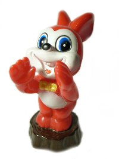
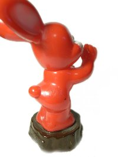

collection
- ■サトちゃん
- ■ピョンちゃん
- ■コルゲンのカエル
- ■オリエンタル坊や
- ■薬局マスコット
- ■企業マスコット
- ■ストラップ
- □ここだよ（街角のマスコット写真）
- □時にはtrip,時にはtravel!
（マスコット旅行記）
- □blog
- □link
- □当サイトについて
- □privacypolicy
- □sitemap
- □top
- ピョンちゃんグッズもくじ
 アンプルピョンちゃん アンプルピョンちゃん - シェイクハンドピョンちゃん
- ピョンちゃんぬりえ
- ラブ& ピースピョンちゃん
- 切り株ピョンちゃん
- 12ヶ月ピョンちゃん
- ミニヨンピョンちゃん
- 現在活躍しているピョンちゃん
- ピョンちゃん指人形
 ピョンちゃんindex ピョンちゃんindex- top
- sitemap
|
■切り株・躍進ピョンちゃん■
6代目切り株（躍進）ピョンちゃん

（違っていたらすみません＾＾；）骨董市で購入しました。

後ろはこんな感じです。切り株に「エスエス」
この赤いピョンちゃんの他、黄色やピンクのもの、
ポーズが違うものなど、いろいろあります。
私自身がなつかしく感じるのは、このピョンちゃんあたりから（笑）
個人的には一番かわいいと思います。（みんなかわいいけどね）
一番なじみがあります。
ピョンちゃんは時代による顔の変化が豊富なので、
人によっていろんな思い入れがあることでしょう。
ピョンちゃん紙袋
  
描かれているのは多分このピョンちゃんかな？と勝手に判断し
こちらへ入れました。
昔薬を購入したら、この袋に入れてもらったことが多かったです。
弘法さんで購入しました。
最終更新 2009.04.16
2008-2009  なないろまーぶる なないろまーぶる
当サイトの画像および文章の無断転載はお断りいたします。
|